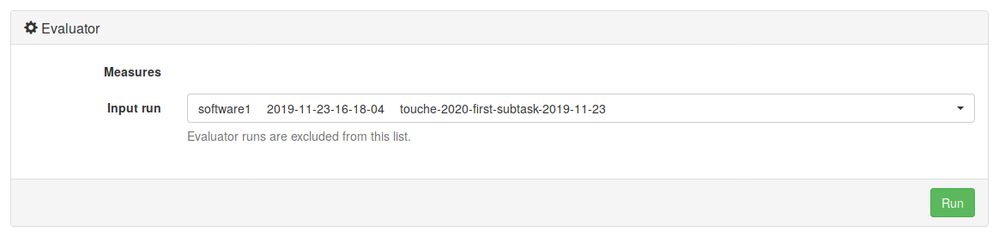

Touché Task 1: Conversational Argument Retrieval
Synopsis
- Task 1: Given a query on a controversial topic, retrieve relevant arguments from a focused crawl of online debate portals.
- Input: [data]
- Submission: [submit]
Task
The goal of Task 1 is to support users who search for arguments to be used in conversations (e.g., getting an overview of pros and cons or just looking for arguments in line with a user's stance). Given a query on a controversial topic, the task is to retrieve relevant arguments from a focused crawl of online debate portals.
To register for the shared task click on [registration].Data
The topics for Tasks 1 will be send to each team via email upon completed registration. The topics will be provided as XML files.
Example topic:
<topic>
<number>1</number>
<title>Is climate change real?</title>
<description>You read an opinion piece on how climate change is a hoax
and disagree. Now you are looking for arguments supporting
the claim that climate change is in fact real.</description>
<narrative>Relevant arguments will support the given stance that
climate change is real or attack a hoax side's argument.</narrative>
</topic>
The 50 new topics will be published in November 2021.
The corpus for Task 1 is the args.me corpus (version 2020-04-01); you may index the corpus with your favorite retrieval system. To ease participation, you may also directly use the args.me search engine's API for a baseline retrieval.
Evaluation
Be sure to retrieve good ''strong'' arguments. Our human assessors will label the retrieved documents manually, both for their general topical relevance, and for argument quality dimensions such as: (1) whether an argumentative text is logically cogent, (2) whether it is rhetorically well-written, and (3) whether it helps a user in their stance-building process, i.e., somewhat similar to the concept of "utility" (more information on argument quality: paper).
[Download qrels from Touché 2020 (args.me corpus version 1)][Download qrels from Touché 2020 (args.me corpus version 2020-04-01)]
Submission
We encourage participants to use TIRA for their submissions to allow for a better reproducibility. Please also have a look at our TIRA quickstart—in case of problems we will be able to assist you. Even though the preferred way of run submission is TIRA, in case of problems you may also submit runs via email. We will try to quickly review your TIRA or email submissions and provide feedback.
Runs may be either automatic or manual. An automatic run does not use the topic descriptions or narratives and must not "manipulate" the topic titles via manual intervention. A manual run is anything that is not an automatic run. Upon submission, please let us know which of your runs are manual. For each topic, include up to 1,000 retrieved documents.
The submission format for the task will follow the standard TREC format:
qid Q0 doc rank score tag
With:
qid: The topic number.Q0: Unused, should always be Q0.doc: The document ID (the official args.me ID) returned by your system for the topicqid.rank: The rank the document is retrieved at.score: The score (integer or floating point) that generated the ranking. The score must be in descending (non-increasing) order. It is important to handle tied scores (trec_eval sorts documents by the score values and not your rank values).tag: A tag that identifies your group and the method you used to produce the run.
An example run for Task 1 is:
1 Q0 Sf9294c83-Af186e851 1 17.89 myGroupMyMethod1 Q0 Sf9294c83-A9a4e056e 2 16.43 myGroupMyMethod1 Q0 S96f2396e-Aaf079b43 3 16.42 myGroupMyMethod...
TIRA Quickstart
Participants have to upload (through SSH or RDP) their retrieval models in a dedicated TIRA virtual machine, so that their runs can be reproduced and so that they can be easily applied to different data (of same format) in the future. You can find host ports for your VM in the web interface, same login as to your VM. If you cannot connect to your VM, please make sure it is powered on: you can check and power on your machine in the web interface.
Your software is expected to accept two arguments:
- An input directory (named
$inputDatasetin TIRA). The variable$inputDatasetpoints to a directory which contains six files:debateorg.json,debatepedia.json,debatewise.json,idebate.json,parliamentary.json(those 5 files form the corpus), andtopics.xml(the topics for which documents should be retrieved). - An output directory (named
$outputDirin TIRA). Your software should create a standard trec run file in$outputDir/run.txt.
args-me.json file or the API of the search engine args.me to produce the run file.As soon as your Software is installed in your VM, you can register it in TIRA. Assume that your software is started with a bash script in your home directory called
my-software.sh which expects an argument -i specifying the input directory, and an argument -o specifying the output directory. Click on "Add software" and specify the command my-software.sh -i $inputDataset -o $outputDir. The other fields can stay with default settings.

Click on "Run" to execute your software in TIRA. Note that your VM will not be accessible while your system is running – it will be “sandboxed”, detached from the internet, and after the run the state of the VM before the run will be restored. Your run will be reviewed and evaluated by the organizers.
NOTE: By submitting your software you retain full copyrights. You agree to grant us usage rights for evaluation of the corresponding data generated by your software. We agree not to share your software with a third party or use it for any purpose other than research.
Once the run of your system completes, please also run the evaluator on the output of your system to verify that your output is a valid submission. These are two separate actions and both should be invoked through the web interface of TIRA. You don’t have to install the evaluator in your VM. It is already prepared in TIRA. You should see it in the web interface, under your software, labeled “Evaluator”. Before clicking the “Run” button, you will use a drop-down menu to select the “Input run”, i.e. one of the completed runs of your system. The output files from the selected run will be evaluated.

You can see and download STDOUT and STDERR as well as the outputs of your system.
In the evaluator run you will see only STDOUT and STDERR, which will tell you if one or more of your output files is not valid.
If you think something went wrong with your run, send us an e-mail.
Additionally, we review your submissions and contact you on demand.
You can register more than one system (“software/ model”) per virtual machine using the web interface.
TIRA gives systems automatic names “Software 1”, “Software 2” etc. You can perform several runs per
system.